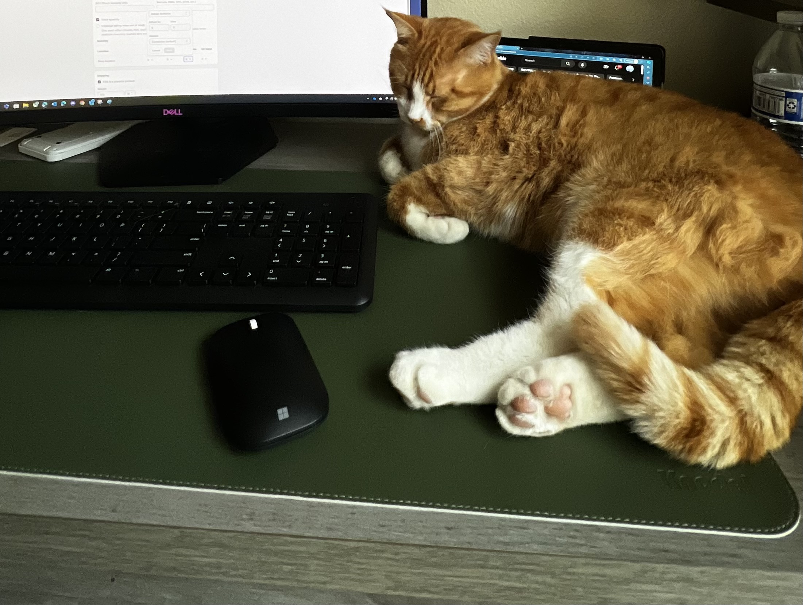
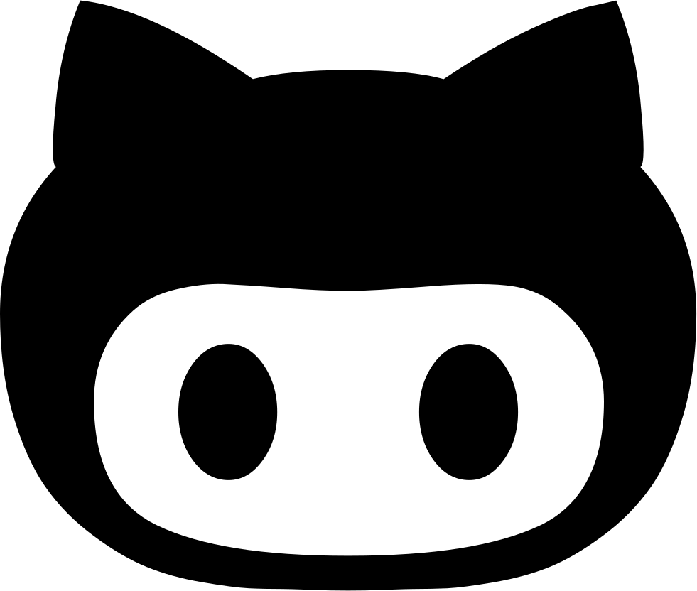
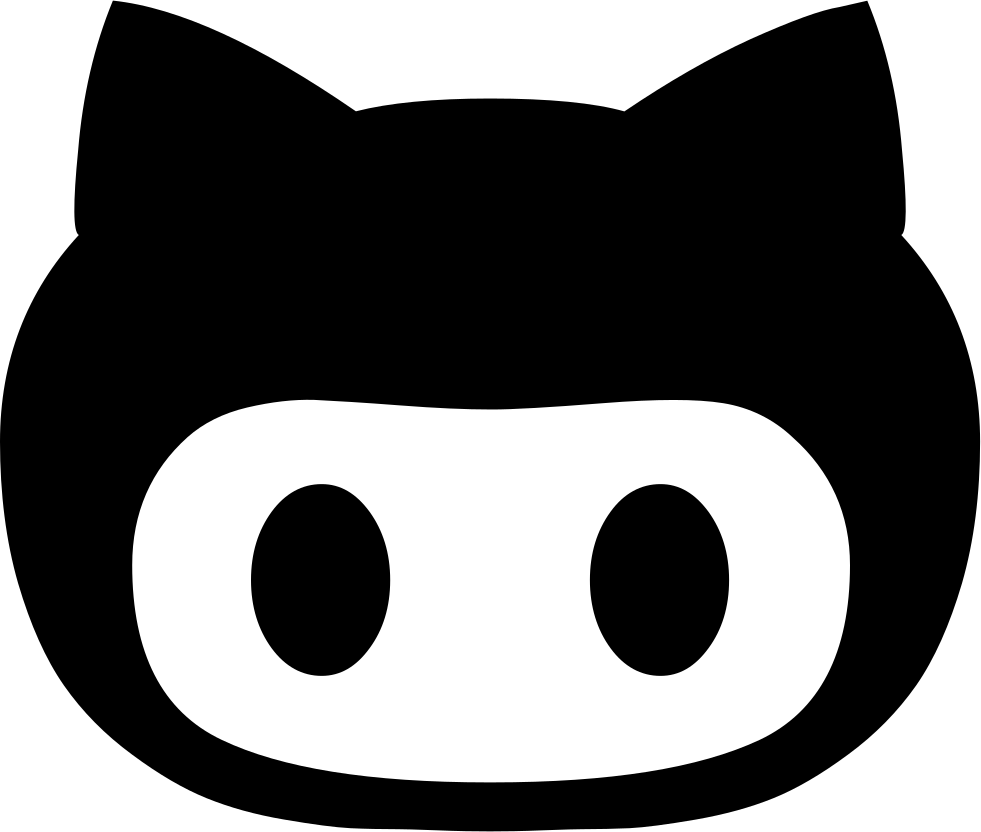

About Me
I am a Computer Science student at Texas Tech University, I am dedicated and passionate about my field of study. I joined Texas Tech in 2021 after completing two years at South Plains College. I am excited to share that I will graduate in May 2024 with a Bachelor of Science in Computer Science and a minor in Mathematics. I look forward to starting my technical career and applying my skills and knowledge.
My love for problem-solving and innovation drives me in the tech world, along with my interest in video game development and design. I am passionate about creating solutions to real-world problems and pushing the boundaries of technology.
Please feel free to explore my portfolio to see my projects and get a sense of my work. If you have any questions or would like to discuss potential opportunities, please don't hesitate to get in touch!
More About Me
I live in Lubbock, Texas, where I was born and raised. I have a cat named Loaf, who often sits on my desk as I write code. I enjoy cooking delicious food, and even recently challenged myself to try a plant-based lifestyle. Considering this, you could assume that I am an environmentally conscious individual. This is true. I even purchased an electric bike, which is now my primary mode of transportation and my way of attempting to cut back on my carbon emissions.
I have always been passionate about video games, both as a player and as a creator. I grew up playing games like Super Mario, Skyrim, and Last of Us. I was amazed and captivated by the immersive worlds and stories they offered to my (sometimes) monotonous life. This fascination gave me an urge to understand how high quality and immersive video games were made, and what kind of skills and tools were involved in their process of making. That curiosity and passion led me to pursue a degree in computer science at Texas Tech University, where I excelled in both academic and extracurricular activities. During my studies, I developed a strong foundation in programming languages, data structures, algorithms, and software engineering. I also participated in several hackathons and student-led computer science clubs, where I collaborated with other students to create innovative solutions for real-world challenges.
My goal is to become a software engineer who can design, develop, and deploy cutting-edge applications that address real-world problems. I am particularly interested in working on projects that involve artificial intelligence, machine learning, and natural language processing, because I believe these are the future of technology. I am also very open to any video game developer positions, an industry of entertainment in which I believe I can make an impact with my skills and creativity. I have thus far created and contributed to two games, one in Godot & the other in Unreal engine. I am always eager to learn new things and improve my craft, and I welcome any feedback, suggestions, or questions!
My Top Skills
HTML, CSS, JavaScript, Python, C++, Java, C, Figma, Unreal Engine, Godot, TensorFlow, SQL, Bash
I have used HTML and honed this skill not only on this website, but a multitude of other websites I have had the privelege of developing.
I have honed my skills in CSS on multiple websites, creating visually appealing and responsive web pages, and ensuring cross-platform functionality and compatibility with different browsers.
I learned C++ during my fundamental programming courses, and I have honed my skills by writing efficient and optimized code for various projects and a game. I am confident in my ability to write clean, maintainable, and scalable code using C++.
I am proficient in Python, having taken on the 100 Days of Python challenge on Replit and used Python in several projects. I have honed my skills in Python by writing efficient and optimized code for various projects.
I am proficient in JavaScript, having built upon my fluency and fundamentals of JavaScript while developing various websites, including this portfolio.
I am proficient in Java, having learned it while taking object-oriented programming at Texas Tech University, where I excelled in the course subject. During the course, I used the Eclipse IDE to write and run Java code.
I created a FPS that mimicked Call of Duty: Zombies gameplay in Unreal Engine in a Game Design class. This project enhanced my interest and understanding of game development, C++, and node based programming.
I used C in courses like Data Structures and Concepts of Programming Languages.
I built Timed Thief in the Godot Engine, during a 24 hour Hackathon. I had no prior experience in the language before this event, however I plan on expanding my knowledge on the engine in the near future!
I recently have started learning Bash in my Operating Systems course.
I have learned the Python TensorFlow library in a Deep Learning course offered at TTU, where I worked with two groups during the semester to make simple neural network models.
I am a member of the Google Student Developer Club where a UI/UX Figma workshop was offered. I hope to recieve my Google certification for UI/UX in the near future.
Some of my Recent Projects
Timed Thief
My collegue Dylan Cook and I created this game in Godot Engine during a 24 hour hackathon. It is a 2D platformer where you play as a thief employed by a wizard to steal valuable artifacts before time runs out. You can download it now and play it here.
Lottery Purchase System
This was a project that Dylan Cook and I developed over the course of a semester. The objective was to make a hypothetically functional lottery purchase system for the Texas Lottery Commission. You can check it out here.
Dreamz
As the CTO of DREAMZ, I lead the development of an innovative platform that allows artists to showcase their art on various products, or “Canvases”. This gives the artists an opportunity to build their brand and earn extra income. I am passionate about this business and its potential for growth. You can check out our website here.
Get In Touch With Me
 
